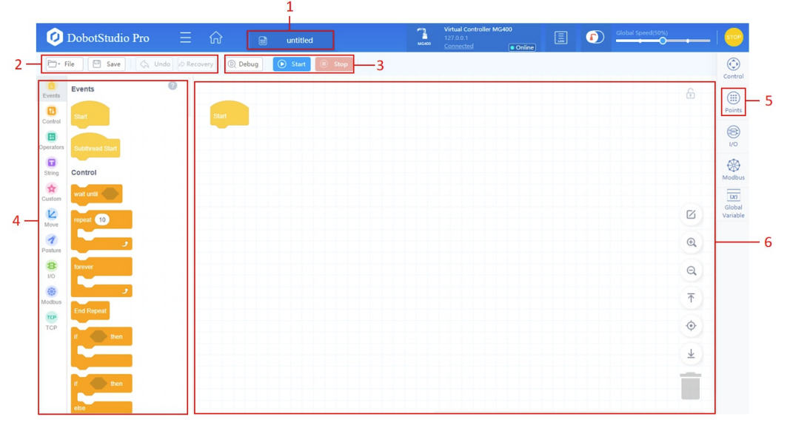
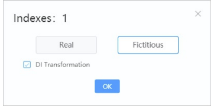
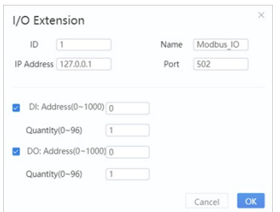

Bloques de Eventos
Definen las condiciones de arranque y los hilos de ejecución paralelos del robot, fundamentales para estructurar programas en DobotStudio Pro.
Comando de Inicio (Start Program)
Este bloque se utiliza exactamente una vez por proyecto y debe posicionarse como la raíz principal. Indica el punto exacto donde la controladora inicia la ejecución secuencial de todas las instrucciones compiladas.
Estructura Script:
-- Hilo Principal LUA
-- Principal Execution
Inicio de Subproceso (Start Subprocess)
Arranca una tarea secundaria en un hilo de fondo (background thread) concurrente. Nota de Seguridad Crítica: Para prevenir accidentes y colisiones, un subproceso paralelo tiene prohibido por firmware controlar los servomotores físicos del robot (bloquea comandos MovJ/MovL y cambios de trayectorias). Su uso está reservado exclusivamente para la verificación constante de variables, lógica matemática de fondo, alarmas o lecturas de sensores I/O.
Estructura Script:
-- Thread Secundario
-- Secondary Thread

Paso para acceder a la interfaz DobotBlockly desde DobotStudio Pro
Step to access the DobotBlockly interface from DobotStudio Pro

Uso interactivo de arrastrar y soltar bloques de eventos y variables
Interactive use of drag-and-drop event and variable blocks
Bloques de Control
Regulan y bifurcan el flujo lógico secuencial del programa, gestionando ciclos de repetición, retardos y configuraciones temporales de seguridad física del robot.
Esperar hasta (Wait Until)
Pausa el programa principal y no avanza al siguiente paso hasta que la condición se evalúa como verdadera (ej. sensor ON). Ideal para evitar bucles infinitos de alta carga de CPU.
Pausas the main program and does not proceed to the next step until the condition evaluates to true (e.g. sensor ON). Ideal for avoiding high CPU load infinite loops.
while not condition do Sleep(50) end
Repetir N veces (Loop N Times)
Repite cíclicamente una serie de bloques embebidos durante una cantidad de iteraciones fija previamente definida por el operador.
Cyclically repeats a series of embedded blocks for a fixed number of iterations previously defined by the operator.
for i = 1, N do ... end
Repetir continuamente (Infinite Loop)
Ciclo de ejecución infinita útil para rutinas continuas de producción. Requiere un bucle de parada (Break) interno bajo una condición de salida para no congelarse.
Infinite execution loop useful for continuous production routines. Requires an internal stop loop (Break) under an exit condition to avoid freezing.
while true do ... end
Fin de la repetición (Break)
Corta y sale de forma inmediata del bucle activo actual (For, While) y continúa con las instrucciones posicionadas después de dicho ciclo.
Cuts and exits immediately from the current active loop (For, While) and continues with the instructions positioned after that loop.
break
Si... Entonces (If... Then)
Evalúa una condición booleana. Si es verdadera, ejecuta las instrucciones internas; si es falsa, salta el bloque completo.
Evaluates a boolean condition. If true, executes internal instructions; if false, skips the entire block.
if condition then ... end
Si... Entonces... Más (If... Else)
Bifurcación de flujo. Si la condición lógica se cumple, ejecuta la ruta A (entonces); de lo contrario, ejecuta la ruta B (más/else).
Flow branching. If the logical condition is met, executes path A (then); otherwise, executes path B (else).
if condition then ... else ... end
Repetir hasta (Repeat Until)
Ciclo lógico que mantiene la ejecución iterativa mientras la condición sea falsa, deteniéndose inmediatamente cuando se vuelve verdadera.
Logical loop that maintains iterative execution as long as the condition is false, stopping immediately when it becomes true.
repeat ... until condition
GOTO: Establecer e Ir a Etiqueta
Etiqueta define una marca espacial física de código. Ir a etiqueta salta la ejecución directo a ese renglón marcado.
Label defines a physical code spatial mark. Go to label jumps execution directly to that marked line.
::mi_marca::
goto mi_marca
Pausa (Pause Program)
Detiene inmediatamente la secuencia de ejecución de movimientos y lógica. El robot queda estático esperando reactivación manual o del software.
Immediately stops execution sequence of movements and logic. The robot remains static waiting for manual or software reactivation.
Pause()
Sensibilidad de Colisiones
Ajusta de forma dinámica los niveles de retroalimentación de corriente de los motores (0 a 5). Los valores altos aumentan la seguridad ante colisiones leves.
Dynamically adjusts motor current feedback levels (0 to 5). Higher values increase safety against minor collisions.
SetCollisionLevel(3)
Mutar Sistema Coordenado Usuario/Herramienta
Cambia temporalmente los orígenes espaciales durante el programa. Al detener el código, se restaura la configuración original.
Temporarily changes spatial origins during the program. When the code stops, the original configuration is restored.
SetUser(index, table) / SetTool(index, table)
Crear Paletizado (Palletizing)
Configura una cuadrícula para acomodo automático de piezas. Se definen filas, columnas, capas y los puntos geométricos extremos.
Configures a grid for automatic parts placement. Rows, columns, layers, and extreme geometric points are defined.
-- Cálculo de coordenadas relativas de paletizado
Retrasar la Ejecución (Sleep)
Detiene la marcha de las instrucciones por un periodo exacto de milisegundos sin inhabilitar el torque de los servomotores.
Stops the execution of instructions for an exact period of milliseconds without disabling the servo motors' torque.
Sleep(1000) -- Retardo de 1 segundo
Establecer Parámetros de Carga (Payload)
Ajusta el peso (en kg) y el centro de gravedad del efector final para calibrar la inercia y suavizar frenados.
Adjusts the weight (in kg) and center of gravity of the end effector to calibrate inertia and smooth out braking.
SetPayload(0.5, {0, 0})

Área de programación del DobotStudio Pro mostrando categorías de control y lógica
DobotStudio Pro programming area showing control and logic categories
Guía Detallada del Entorno (Puntos 1 al 6)
1
Nombre del proyecto actual
Muestra la etiqueta del archivo que se está editando en ese instante en la pestaña activa de DobotBlockly.
2
Gestión de archivos y acciones
Permite abrir, guardar, deshacer o rehacer cambios. Incluye la opción para exportar el programa visual a un script textual en código LUA nativo.
3
Control del programa
Botonera interactiva que contiene las opciones para compilar y ejecutar (Start), pausar (Pause) o detener de inmediato (Stop) la rutina del robot.
4
Bloques de programación
Paleta lateral clasificada por colores y tipos (Movimiento, Control, E/S, Lógica, Modbus). Permite arrastrar bloques funcionales.
5
Panel de Puntos (Points)
Pestaña para desplegar y registrar las coordenadas espaciales. Muestra un punto indicador rojo si hay cambios de posición no guardados.
6
Área de edición del programa
Lienzo principal de trabajo. Clic derecho sobre bloques abre opciones adicionales como duplicar, borrar o colapsar.
Bloques de Movimiento
Comandos que dictan la traslación del extremo del brazo en el espacio de coordenadas cartesianas (X, Y, Z, R) o el giro directo de sus cuatro servomotores (J1, J2, J3, J4).
Desplazarse al punto objetivo (MovJ / MovL)
Lleva al robot hasta una coordenada pregrabada. Al hacer doble clic en el bloque se selecciona el tipo de movimiento:
Moves the robot to a pre-recorded coordinate. Double-clicking the block selects the movement type:
- MovJ (Joint): Movimiento articular curvo y ultra veloz en el aire. Las articulaciones se mueven juntas.
- MovL (Linear): Trayectoria en línea recta estricta. Preciso para ensamble de piezas.
API LUA:
MovJ(P1, {CP=1, SpeedJ=50})
MovL(P1, {CP=1, SpeedL=50})
Movimiento de Salto (Jump)
Realiza un movimiento en forma de "puerta" (el robot sube verticalmente la altura configurada, se traslada en plano horizontal y desciende verticalmente en el destino). Crucial para evadir colisiones con obstáculos intermedios de forma automática y segura.
Performs a "gate-shaped" movement (the robot lifts vertically to the configured height, travels in a horizontal plane, and descends vertically at the destination). Crucial to avoid collisions with intermediate obstacles automatically and safely.
API LUA:
Jump(P1, {Start=10, ZLimit=100, End=20})
Movimientos en Arco y Circular (Arc / Circle)
Traza trayectorias circulares o curvas suaves en base a tres puntos geométricos definidos (Punto de inicio actual, punto de paso medio P1 y punto final P2) que no se encuentren en línea recta.
Traces circular trajectories or smooth curves based on three defined geometric points (Current start point, mid step point P1, and end point P2) that are not in a straight line.
API LUA:
Arc3(P1, P2, {SpeedL=50})
Circle(P1, P2, Count, {SpeedL=50})
Movimientos Acoplados a Salidas (MovJIO / MovLIO)
Comandos avanzados que ejecutan un traslado lineal o articular y conmutan una salida digital física (DO) en una distancia o punto específico a mitad de la trayectoria del robot.
Advanced commands that execute a linear or joint translation and commute a physical digital output (DO) at a specific distance or point mid-trajectory of the robot.
API LUA:
MovLIO(P1, {Mode, Dist, Index, Status})
Parámetros Dinámicos (Speed, Accel, CP)
Ajustan las relaciones de velocidad y aceleración lineales o articulares. El parámetro CP (Continuous Path) define el redondeo y la suavidad de transición al enlazar puntos consecutivos en el espacio, evitando paradas mecánicas abruptas.
Adjust linear or joint speed and acceleration ratios. The CP (Continuous Path) parameter defines the rounding and smoothness of transition when linking consecutive points in space, avoiding abrupt mechanical stops.
API LUA:
SpeedJ(50) / AccL(20) / CP(50) / Sync()

Módulo "Points" para gestionar y grabar las coordenadas cartesianas P1, P2...
"Points" module to manage and record Cartesian coordinates P1, P2...

Interfaz del panel de puntos para grabar la posición física actual del brazo robótico
Points panel interface to record the current physical position of the robot arm
Bloques de Entradas y Salidas (I/O)
Gestionan las señales de voltaje digitales y analógicas para interactuar con sensores ópticos, interruptores externos, luces piloto y válvulas de herramientas como pinzas o ventosas de vacío.
Leer Entrada Digital (Read DI)
Consulta el nivel de voltaje actual de un pin de entrada en el bloque de terminales (retorna 1/ON si hay 24V o 0/OFF si hay 0V).
Queries the current voltage level of an input pin on the terminal block (returns 1/ON if 24V or 0/OFF if 0V).
estado = DI(index)
Configurar Salida Digital (Set DO)
Conmuta y energiza un pin del bloque de salidas (ej. DO1 en ON activa la ventosa de vacío). Es el comando usado para agarre o soltado físico.
Commutes and energizes an output block pin (e.g. DO1 on ON activates the vacuum suction cup). It is the command used for physical grip or release.
DO(index, status) -- ON/OFF
Esperar Entrada Digital (Wait DI)
Detiene el avance del programa principal hasta que una entrada física cambie a un valor determinado (ON/OFF) o expire el timeout de desbordamiento.
Stops the main program progress until a physical input changes to a determined value (ON/OFF) or the overflow timeout expires.
-- Espera activa a nivel de hardware
Entrada Digital del Cabezal (ToolDI)
Lee el estado del sensor directamente desde el puerto IO integrado en el extremo mecánico del brazo (evita tirar cables largos hasta el gabinete).
Reads sensor status directly from the IO port integrated at the mechanical end of the arm (avoids pulling long cables to the cabinet).
estado = ToolDI(index)
Salida Digital Instantánea (DOInstant)
Conmuta de inmediato el pin DO de la tarjeta sin esperar a que el brazo complete la ejecución física de los movimientos que estén en la cola.
Immediately switches the card's DO pin without waiting for the arm to complete the physical execution of movements in the queue.
DOInstant(index, status)
Configurar Grupo de Salidas
Define y controla múltiples salidas digitales juntas escribiendo un byte binario combinado para controlar sistemas de actuadores de múltiples válvulas.
Defines and controls multiple digital outputs together writing a combined binary byte to control multi-valve actuator systems.
-- Configuración conjunta de matriz de salidas

Panel de Monitoreo de I/O en DobotStudio Pro mostrando simulación de entradas digitales
I/O Monitoring Panel in DobotStudio Pro showing digital input simulation
Bloques de Postura
Permiten adquirir y evaluar las coordenadas actuales del robot, calculando desplazamientos geométricos relativos en el espacio y leyendo valores articulares individuales.
Obtener Postura Cartesiana (Get Pose)
Consigue las coordenadas físicas X, Y, Z (en mm) y R (grados) de la brida del robot respecto al origen coordenado seleccionado.
Gets the physical coordinates X, Y, Z (in mm) and R (degrees) of the robot flange relative to the selected coordinate origin.
posicion = GetPose()
Obtener Coordenadas Articulares (Get Joint)
Consigue la posición angular física actual en grados decimales de las articulaciones mecánicas individuales J1, J2, J3, J4.
Gets the current physical angular position in decimal degrees of the individual mechanical joints J1, J2, J3, J4.
angulos = GetAngle()
Calcular Desfase (RelPoint)
Calcula un nuevo punto sumando coordenadas relativas en milímetros a un punto origen predefinido. No realiza movimiento inmediato.
Calculates a new point by adding relative coordinates in millimeters to a predefined source point. Does not perform immediate movement.
nuevoPto = RelPoint(P1, {10, 0, 50, 0})
Obtener Eje Cartesiano Específico
Extrae de forma directa solo el valor decimal numérico de un eje específico (ej. verificar la altura Z de la pieza en tiempo de ejecución).
Directly extracts only the numerical decimal value of a specific axis (e.g. verify the piece Z height at runtime).
z_actual = GetPose()[3]
Interfaz de administración de coordenadas cartesianas y articulares de postura del DobotStudio Pro
DobotStudio Pro posture Cartesian and joint coordinates management interface
Bloques de Modbus
Habilitan la integración del MG400 en redes industriales estándar para intercambiar datos analógicos y de bits de control con PLCs (Siemens, Allen Bradley), interfaces HMI y sistemas SCADA.
Crear Maestro Modbus (Modbus Create)
Inicializa una estación maestra en el robot apuntando a la dirección IP y el puerto de red (usualmente 502) del esclavo Modbus para establecer comunicación.
Initializes a master station on the robot pointing to the IP address and network port (usually 502) of the Modbus slave to establish communication.
API LUA:
ModbusCreate(IP, port, slaveID)
Operaciones de Lectura / Escritura Modbus
Permite consultar o modificar registros analógicos (HoldRegs, InRegs) y señales de bits lógicos (Coils, InBits) en la red de esclavos externos.
Allows querying or modifying analog registers (HoldRegs, InRegs) and logical bit signals (Coils, InBits) in the external slave network.
API LUA:
GetCoils(id, addr, cnt)
SetCoils(id, addr, cnt, tbl)
Esperar Registro Modbus (Wait Modbus)
Pausa el flujo secuencial de bloques del robot hasta que un registro específico (Holding, Input, Coil) cumpla la regla de comparación (ej: esperar que el registro 100 de un PLC tome el valor de inicio "1").
Pauses the robot's sequential block flow until a specific register (Holding, Input, Coil) meets the comparison rule (e.g. wait for register 100 of a PLC to take the start value "1").
API LUA equivalente:
while GetCoils(id, 0, 1)[1] == 0 do Sleep(100) end

Configuración de comunicación Modbus en la interfaz de DobotStudio Pro
Modbus communication configuration in DobotStudio Pro interface

Definición conceptual y tasa de escaneo de Maestro y Esclavos Modbus
Conceptual definition and scan rate of Modbus Master and Slaves
Bloques de Comandos TCP/IP y UDP
Habilitan la comunicación cruda sobre Ethernet por sockets de red para integración directa con cámaras inteligentes de visión artificial u ordenadores.
Establecer conexión de socket (TCP Start / Connect)
TCPStart(socket, timeout)
Crea un socket TCP Cliente para conectarse a un servidor en la red o configura el robot como servidor de red esperando conexiones.
Enviar / Recuperar variables (Send / Receive TCP)
TCPWrite / TCPRead
Envía cadenas de caracteres ASCII o variables dinámicas al receptor de red, o lee strings crudos recibidos (ej. posiciones XY enviadas por una cámara de visión).
Cerrar socket (TCP Close / Destroy)
TCPDestroy(socket)
Termina la conexión del socket de red activo de manera controlada y libera el puerto de red.
Bloques de Operadores Matemáticos y Lógicos
Ejecutan cálculos algebraicos complejos, comparaciones numéricas y lógica booleana.
Comandos Aritméticos
Suma (+), resta (-), multiplicación (*), división (/) y obtención del residuo (resto o módulo de la división).
Comparaciones y Lógica Booleana
Lógicas relacionales de mayor o menor que, igualdad y compuertas booleanas AND, OR, NOT.
Operaciones Especiales (Monódicas)
Valor absoluto, funciones trigonométricas (seno, coseno, tangente) y cálculo de raíces cuadradas.
Comando Imprimir (Print)
Envía un mensaje o el valor actual de una variable de depuración a la consola de registro de DobotStudio Pro.
Bloques de Cadenas y Matrices
Permiten la manipulación de texto e índices de arreglos de datos en memoria.
Operaciones de Cadenas
Permite unir dos textos (conectar), obtener el número de letras (longitud), verificar si contiene una palabra clave o reemplazar caracteres.
Conversión de Matrices
Transforma un texto separado por comas en un arreglo indexable de datos (cadena a matriz) y viceversa.
Funcionamiento de Conversión
En la programación del Dobot, es común recibir coordenadas o comandos en formato de texto plano (cadena/string). El bloque de conversión ayuda a convertir estos datos a matrices utilizables (arrays) y viceversa.
Bloques de Personalización y Funciones
Configuran variables locales, variables globales, listas personalizadas (arreglos) y la declaración de funciones o subrutinas reutilizables.
Crear Variables Globales y Locales
Crea variables numéricas o de texto personalizadas en la memoria. Permite almacenar datos dinámicos durante la ejecución de los ciclos de paletizado.
Operaciones de Arreglos (Arrays)
Crea arreglos vacíos, agrega o remueve elementos en un índice seleccionado, sustituye valores o borra todo el arreglo de datos.
Creación y Llamado de Funciones
Define una función poniéndole un nombre y decidiendo cuántos datos de entrada necesita. Permite encapsular y reutilizar código repetitivo.
Crear Subrutinas
Genera una pequeña secuencia del programa principal que puede usarse varias veces (subrutina en bloque o subrutina de script).